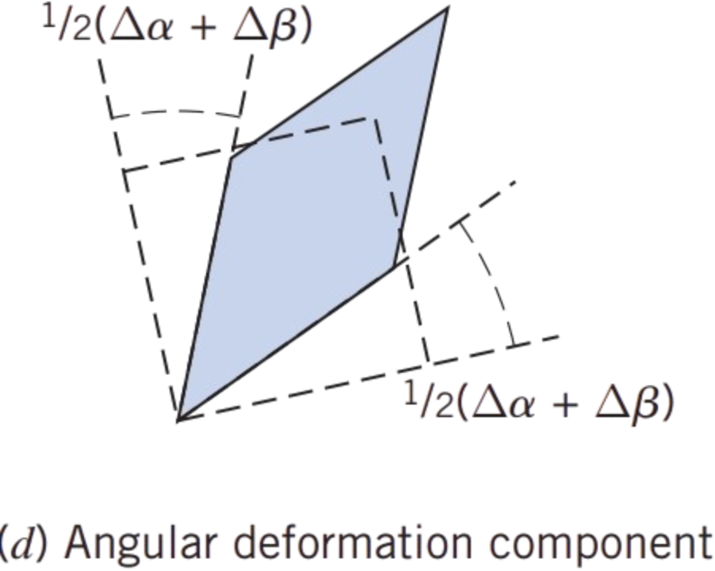

Based on our discussion of the flow rotation , we can easily extend our calculation to find the angular deformation. Recall that rotation was the average of the rotation of two perpendicular lines \( \frac{1}{2}(\Delta \alpha - \Delta \beta) \). The total angular deformation is nothing but the total sum of the deformations \( \Delta \alpha + \Delta \beta \)
Recalling that \( \Delta \alpha = \Delta \eta / \Delta x \), and \( \Delta \beta = \Delta \xi / \Delta y \), and using \(\boxed{\Delta \xi = \left( v_x + \frac{\partial v_x}{\partial y} \Delta y \right) \Delta t - v_x \Delta t = \frac{\partial v_x}{\partial y} \Delta y \Delta t}\), \(\boxed{ \Delta \eta = \left( v_y + \frac{\partial v_y}{\partial x} \Delta x \right) \Delta t - v_y \Delta t = \frac{\partial v_y}{\partial x} \Delta x \Delta t} \) we then have for the average angular deformation in the \( xy \) plane: \[ E_{xy} = \lim_{\Delta t \to 0} \frac{1}{2}(\Delta \alpha + \Delta \beta)/\Delta t = \frac{1}{2} \lim_{\Delta t \to 0} \left( \frac{\Delta \eta}{\Delta x} + \frac{\Delta \xi}{\Delta y} \right) / \Delta t = \frac{1}{2} \lim_{\Delta t \to 0} \left( \frac{\partial v_y}{\partial x} \Delta t + \frac{\partial v_x}{\partial y} \Delta t \right)/\Delta t \] \[ E_{xy} = \frac{1}{2} \left( \frac{\partial v_y}{\partial x} + \frac{\partial v_x}{\partial y} \right) \]
And similar to what we did with the rotation, by considering the deformation of pairs of perpendicular line segments in the \( yz \) and \( xz \) planes, we find that \[ E_{yz} = \frac{1}{2} \left( \frac{\partial v_z}{\partial y} + \frac{\partial v_y}{\partial z} \right), \quad E_{xz} = \frac{1}{2} \left( \frac{\partial v_x}{\partial z} + \frac{\partial v_z}{\partial x} \right) \]